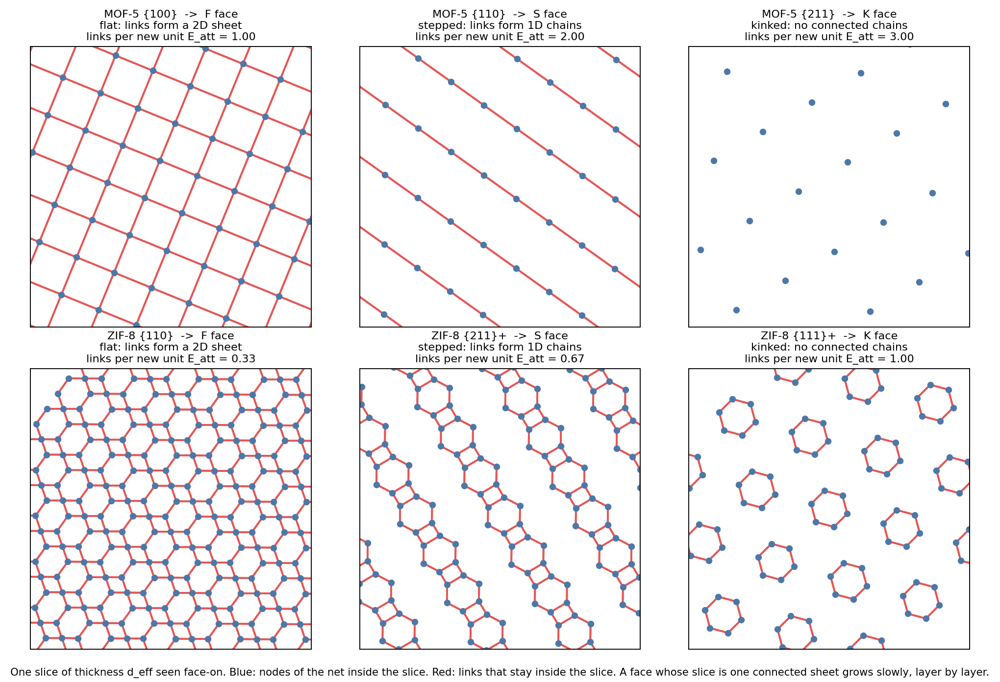
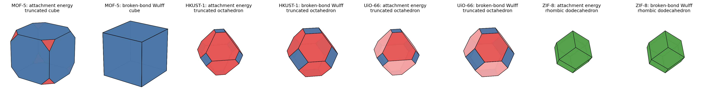

1What This Page Does
- You know
- Faces, slices, bond chains and growth rates (Learn), the propositions behind them (Mathematics), and the shapes a unit cell allows (Morphology).
- This page
- Phase 3. Uses each framework's own periodic graph, built from its CIF file, to compute which faces are flat, how fast each grows, and which shape results.
- Which lets us
- Choose, from the family of shapes a unit cell allows, the one its connectivity favours, and compare that with experiments.
Phase 1 showed that one unit cell allows a whole family of shapes, but the lattice-only rule (BFDH) gave the same truncated octahedron for MOF-5, HKUST-1 and UiO-66. Real crystals differ: MOF-5 grows as cubes. This page asks whether the way the building blocks are linked is enough to tell the three apart. It is, for all four structures.
2Method: Three Numbers per Face, Counted on the Graph
1. Build the graph from the CIF
The project's own pipeline (code_12.quotient_graph_from_cif: bond perception, metal-oxo decomposition, labelled quotient graph) turns each CIF into building blocks and links (i, j, t). Each block is placed at the centroid of its atoms. Two-connected linkers (BDC, imidazolate) are then replaced by a single link between the two nodes they join, the standard way of reading off a framework's net. Three-connected linkers, such as BTC in HKUST-1, stay as vertices.
The nets come out as expected: pcu for MOF-5 (6-connected), tbo for HKUST-1 (3- and 4-connected), fcu for UiO-66 (12-connected), sod for ZIF-8 (4-connected).
2. Cut the net into slices
For each face family, slices are cut parallel to the face with thickness deff from the space group (Proposition 2). Where a slice boundary falls matters, so every possible boundary between two levels of vertices is tried, and the one that cuts the fewest links is kept, as a real crystal face exposes its most stable termination.
3. Count, exactly
where
- Eatt
- attachment number: links a new building unit forms when a slice lands on the face, averaged over the slice. The graph form of the attachment energy; growth rate R ∝ Eatt (Hartman–Bennema).
- γ
- broken-bond surface energy: each cut link costs one unit of energy. Used as the face distance in a Wulff shape.
- rank
- 2: the slice is one connected sheet, an F face; 1: separate chains, an S face; 0: isolated pieces, a K face. This is the periodicity rank of the earlier project work, applied to one slice.
Counts (1) and (2) are computed exactly from the quotient graph with Proposition 13: no finite crystal is built, so nothing depends on how big a cluster was cut.
3Validation on Textbook Crystals
Before touching a MOF, the code was run on nets whose answers are in textbooks. All 11 checks in 2_python/morphology/tests_phase3.py pass.
| Net | Face | Eatt expected | Class expected | Computed |
| Simple cubic (Kossel) | (100), (110), (111) | 1, 2, 3 | F, S, K | 1, 2, 3; F, S, K |
| fcc (nearest neighbours) | (100), (110), (111) | 4, 5, 3 | F, S, F | 4, 5, 3; F, S, F |
| bcc (nearest neighbours) | (110), (100) | 2, 4 | F, K | 2, 4; F, K |
| fcc broken bonds | γ100/γ111 | 2/√3 = 1.1547 | — | 1.1547 |
| Decorated pcu | contract two-connected linkers | pcu, degree 6 | — | pcu, degree 6 |
4What a Slice Looks Like
The pictures below show one slice of the real MOF-5 and ZIF-8 nets, seen face-on. Blue dots are vertices of the net inside the slice; red lines are links that stay inside it.

5Results: the Faces of the Four MOFs
Lower Eatt means slower growth, and lower γ means a cheaper surface; both favour a face. Values are averaged over all vertices of a slice, so for HKUST-1, whose net has two kinds of vertex, they are fractions. These numbers were computed by 2_python/morphology/run_phase3.py and are read from phase3_data.js.
6Shapes, and the Comparison with Experiment
Each set of numbers is turned into a shape with the polytope of the Learn page: Eatt as growth rates, and γ as Wulff face distances. Faces covering under 1% of the surface are listed in the data but not used to name the shape.

- Every link counts as one unit of energy. Real bonds differ (a Zn–N bond is not a Zr–O bond), and solvent and modulators change surface energies. That is the chemistry layer, Phase 4.
- “Match” means the dominant faces agree. The exact truncation of a real crystal depends on synthesis, which is why Phase 1's whole family of shapes matters.
- Four structures are a demonstration, not a statistical test. A wider set of nets is needed before a general claim.
- The F/S/K classes use links as the strong bonds, a modelling choice stated here, and only the termination that cuts the fewest links.
7Code and How to Reproduce
| File | What it does |
2_python/morphology/mofmorph/graphfaces.py | Periodic graph, linker contraction, exact slice counts (Proposition 13), slice periodicity rank |
2_python/morphology/tests_phase3.py | The 11 textbook checks above |
2_python/morphology/run_phase3.py | Runs all four CIFs and writes results/phase3_results.json and the shape figures |
2_python/morphology/figs_phase3.py | Draws the slice figure |
1_website/_build/build_phase3_data.py | Copies the results into phase3_data.js for this page |
Order: python3 2_python/morphology/tests_phase3.py, then run_phase3.py, figs_phase3.py, and python3 1_website/_build/build_phase3_data.py.